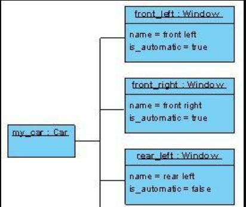

UML对象图
话不多说，开门见山！先看目录
（1）什么是对象图
（2）对象图作用
（3）对象图的核心概念
（4）如果快速分辨出对象图
什么是对象图
对象图：描述的是 某个特定时刻 类的具体实例 以及 它们如何联系起来等相关信息。
对象图的作用
在分析和设计阶段创建；捕获实例和连接；捕获交互的静态部分；举例说明数据/对象结构；详细描述瞬态图。
对象图的核心概念

对象实例
对象实例是一个具体类的实现。上图就是一个简单的对象图。
上图中就有四个对象，分别是my_car，front_left、front_right、rear_left四个对象。my_car是car类的实例，其余三个是window的实例。
怎么看出来的？
一个实例和一个类一样，都是一个矩形表示，但是不同在于：
实例其名称下面具有一根下划线，在线上标明了这一实例的名称以及其所属的分类器），实例名与分类器之间采用‘:’进行分割，而如果有多个所属分类器，那么分类器之间采用逗号分开。比如上图中所有的实例都只有一个分类器，比如my_car所属分类器是Car类，也就是说my_car是Car类的一个实例，而front_left、front_right、rear_left和rear_right都分别是Window类的一个实例。
槽
槽描述的就是实例的属性，实例可以有槽，可以没有。上图中my_car就是没有槽。其他类都是俩个槽，多少个属性值，多少槽。
链接
链接表示的是实例与实例之间也有关系。（其实就是一条线连接起来，个人认为实例代表的类之间有关系就连起来。
如果快速分辨出对象图
看矩形是否有一根下划线，是否有“:”号 看是否有槽的结构，槽中出现的是“属性：属性值”。有具体属性值的肯定是实例图。